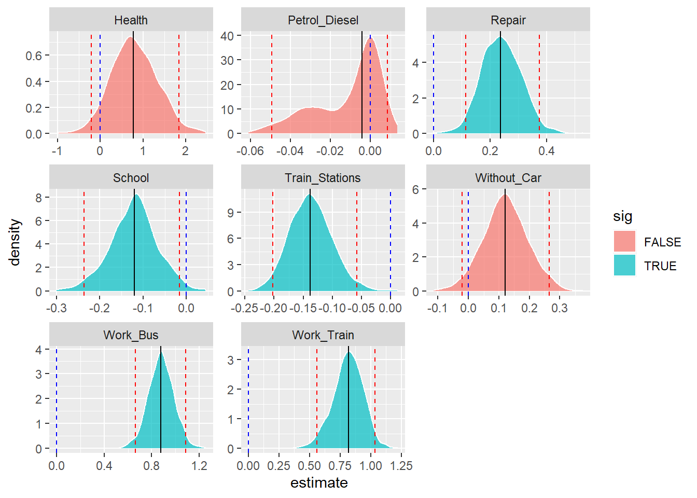

Generate Reproducible & Live HTML and PDF Conference Posters Using RMarkdown
Brent Thorne1, Another G. Author2
1 Department of Mathmatics & Statistics, University of Glasgow
Introduction
Welcome to posterdown ! This is my attempt to provide a semi-smooth workflow for those who wish to take their R Markdown skills to the conference world. Most features from R Markdown are available in this package such as Markdown section notation, figure captioning, and even citations like this one (Allaire et al. 2021). The rest of this example poster will show how you can insert typical conference poster features into your own document.
Objectives
- Easy to use reproducible poster design.
- Integration with R Markdown.
- Easy transition from
posterdowntopagedownreport or manuscript documents (Xie et al. 2020).
Methods
This package uses the same workflow approach as the R Markdown you know and love. Basically it goes from RMarkdown > Knitr > Markdown > Pandoc > HTML/CSS > PDF. You can even use the bibliography the same way (Thorne 2019).
Results
| Variable | Mean | SD | min | max |
|---|---|---|---|---|
| Expenditure | 25735.16 | 69857.32 | -10844.0 | 502630.00 |
| Killed_Injured | 124.17 | 338.85 | 1.0 | 2842.00 |
| Cards | 73852.76 | 207392.71 | 3979.0 | 1436617.00 |
| Congestion | 10.53 | 4.99 | 0.0 | 23.60 |
| Repair | 37.10 | 8.20 | 19.5 | 62.00 |
| Mileage | 2653.78 | 7353.99 | 131.0 | 48714.21 |
| Work_Bus | 8.64 | 5.64 | 0.0 | 28.50 |
| Business | 2.40 | 1.79 | 0.0 | 14.00 |
| School | 51.99 | 11.86 | 15.8 | 84.00 |
| Commuting | 24.25 | 4.77 | 14.8 | 43.60 |
| Work_Cycling | 1.88 | 2.01 | 0.0 | 11.80 |
| Education | 4.97 | 2.46 | 0.6 | 12.60 |
| Health | 2.32 | 0.94 | 0.0 | 5.70 |
| Shopping | 22.66 | 3.70 | 12.0 | 35.10 |
| Work_Train | 4.01 | 3.90 | 0.0 | 19.00 |
| Work_Walking | 12.22 | 5.54 | 0.5 | 29.00 |
| Train_Stations | 20.42 | 57.62 | 0.0 | 357.00 |
| Satisfaction | 69.56 | 10.28 | 35.0 | 93.00 |
| One_Car | 43.96 | 3.80 | 33.3 | 53.50 |
| More_Car | 29.79 | 7.35 | 10.8 | 50.30 |
| Without_Car | 26.21 | 8.50 | 8.7 | 52.20 |
| Petrol_Diesel | 181.39 | 501.18 | 8.0 | 3331.00 |

| model | adj.r.squared | AIC | BIC |
|---|---|---|---|
| model 1 | 0.5478475 | 1271.288 | 1365.604 |
| model 2 | 0.5625876 | 1254.526 | 1309.814 |

Next Steps
Aliquam sed faucibus risus, quis efficitur erat. Vestibulum semper mauris quis tempus eleifend. Aliquam sagittis dictum ipsum, quis viverra ligula eleifend ut. Curabitur sagittis vitae arcu eget faucibus. In non elementum felis. Duis et aliquam nunc. Nunc pulvinar sapien nunc, vel pretium nisi efficitur in. Fusce fringilla maximus leo et maximus. Fusce at ligula laoreet, iaculis mi at, auctor odio. Praesent sed elementum justo. Aenean consectetur risus rhoncus tincidunt efficitur. Praesent dictum mauris at diam maximus maximus (Thorne 2019).
Conclusion
Try posterdown out! Hopefully you like it!